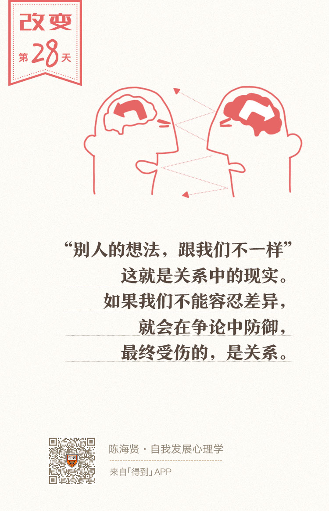

28丨都是你的错：我们为什么要相互指责？

欢迎来到《自我发展心理学》。
你好，我是陈海贤。
我们继续来讲关系的混淆如何影响自我发展。在前面两讲中，我们讲了两种感觉的混淆导致的不健康关系模式。其实，除了感觉，我们还常常有另一种混淆，那就是责任的混淆。
很多人都知道，最有利于自我发展的关系，是一种自主的、有选择的，又能为自我负责的关系。
可是在真实的关系里，我们很容易不自觉地逃避自己的责任，觉得不是我们自己，而是别人在主导着关系的结果。所以，我们会试图通过控制别人来解决关系的难题。
今天，我们就来讲这样一种典型的责任混淆，我把它取名叫“都是你的错”。
“都是你的错”的思维源头
这种思维你应该很熟悉。
在关系中，我们很多生气、愤怒、抱怨的背后，都有这些指责的影子。可是，对于这种思维的源头，也许你就没那么熟悉了。
这个源头就是：从个体的角度看自我。
从个体的视角看自我，怎么就会导致“都是你的错”的思维误区呢？让我来解释一下。
如果两个人的关系出现了问题，从个体的视角看，我们会把人从关系中割裂开来，觉得是他的个性，造成了这种关系的问题。
比如：
- 这是一个控制的妈妈，所以老公和孩子都对她有意见；
- 这是一个软弱的领导，所以员工都反对他。
但是，如果从关系的视角看，我们就会看到，这并不是一个人的问题，而是关系的各方相互配合，造成了这样的局面。
我们不会问这个妈妈是不是很控制，而会想，老公和孩子做了什么，让妈妈这么爱控制，而妈妈又做了什么，让老公和孩子都对她有意见。
如果把人从关系中割裂开看，就会产生连锁反应。
首先，它会让你有因果思维，让你认为是一个人做了什么事，所以才让另一个人有这样的反应。是妈妈控制，所以老公和孩子才对她有意见，才想要反抗她。
因果思维非常讲究时间上的先后顺序。
而因果思维又导致了对错思维。既然有因有果，我们就难免要去追究对错，追究谁是不美满结果的第一原因，追究谁该为结果负责。
所以简单来说，个体视角导致了因果思维，而因果思维又导致了对错思维。冲突也就从这里开始。
通常情况下，偏偏那个被认为是罪魁祸首的人，也不认为自己是原因，他觉得你才是原因，他只是结果。于是两个人就开始起了争执。人与人的关系模式就这样形成了。
对错思维塑造对立关系
其实，对错思维虽然是个体视角的产物，但它本身也没有逃脱关系的约束。
因为，对错思维本身也是在塑造一种关系：好人和坏人的关系；施害者和受害者的关系；惩罚者和被惩罚者的关系；聪明的人和无知的人的关系……
无论是怎么样的关系，对错思维都把关系的双方对立了起来，塑造的就是一种对立关系。
还记得我们前面讲到，一对情侣吵架，男朋友跟女朋友说：“好了好了，都是我的错。”女朋友不依不饶地说：“那你说说你错哪了？”
讨论对错，就像两个在拳击台上的对手，都不敢轻易把自己防御的拳头放下。因为他知道，如果我把拳头放下，对方是可能会穷追猛打一顿爆锤的。
而这样，谁也不敢认错，谁都指责对方错了，两个人的关系，就在对错的讨论中陷入了僵局。
可是仔细想想，关系中，对错的标准是什么呢？
常常是“你没有顺我的意”。当然“你没有顺我的意”之前还有一句话——“你对我很重要”。要不然我们也不会这么纠结对错了。
可也正是因为“你对我很重要”，我更难接受“你没顺我的意”。
说到这儿，你是不是会想起一些什么？还记得我们在第二部分所讲的应该思维吗？
应该思维的本质，是我们不去改变我们的想法，而要世界、自己或者他人按我们的想法运行。纠结对错，就是关系里的应该思维。
我有一个来访者，经常抱怨老公太不负责任、孩子太拖拉，这让她非常烦躁。老公和孩子对她也有意见，一家人就开始出现了矛盾和冲突。
我就问她老公怎么不负责任了。她说，孩子成绩不好，最开始她也不想多管，就放手让老公来教孩子。
可是老公的做法，就是每天对着儿子念叨三遍：“你要好好学习啊！”就好了。过一阵子她去检查儿子的作业，结果发现全是错的。没办法，只好自己来。
她接手以后，孩子的成绩突飞猛进，可是她自己很郁闷，觉得是老公不能干，才让自己被孩子绑住了。
我就问她：“是谁把你逼成这样了啊？”
她想了想说：“是现实把我逼成这样了。因为老公教孩子，证明就是不行啊。”
我说：“可是我觉得，你是选择了为理想，接过了老公的工作，把自己燃烧成了光和热啊。”她就笑了。
其实这两种说法是有区别的。
她说的是：“老公和孩子把我逼成了这样，我没有选择。”
可是我说的是：“你为了自己的理想，选择了这么做。”
这么说来访者也并不完全同意，她说：“难道不应该让孩子成绩好起来吗？孩子成绩好，老公也开心啊。”
我说：“是啊。可是孩子成绩没那么好，老公好像也能容忍。要这么说，孩子成绩好，这不是他们的理想，它就是你的理想啊。”
她叹了口气，说，“唉，就是老公和儿子的理想，跟我的理想不一样。”
“别人的想法，跟我们不一样”，这就是关系中的现实。你头脑中有再多的“应该”，“成绩好应该很重要”、“孩子应该听话”、“老公应该关心我”，而没有办法改变这个事实。
对错就是维护这个应该思维的工具，是让别人的想法屈服于我们自己想法的企图。
有时候，我们能够容忍这种差异，那我们就会变得更灵活，有更多处理的空间。可是如果我们不能容忍这种差异，那我们就会在对错的争论中拼命防御，而最终受伤的，是关系。
承担自己能承担的责任
讲到这里，你应该已经理解了个体思维是怎么导致了“都是你的错”的指责，而这些指责又是怎么伤害我们与他人的关系。
那么从关系的思维看，我们该怎么看责任问题呢？
其实特别简单，就是我们这一章里反复传递的一个观点：关系里，人的行为是相互塑造的。根本没有什么明确的因果，也就没有明确的对错。
这确实不是一种容易接受的思考方式。
问题的关键是：没有了对错，我们身处的关系如果出现了问题，该怎么办？谁来改变？
我的回答是：
我经常会在咨询室里处理关系出问题的夫妻或者伴侣。他们吵得不可开交的时候，妻子会责怪丈夫不思进取，丈夫会责怪妻子不够体贴关心。
其实他们反反复复在说的就是一句话：“都是你的错，如果你按我的想法做，我们的关系早就变好了。”
有时候我会让他们停下来，跟他们说：“你们已经罗列了太多对方的错误，尝试了太多让对方改变的事情，看起来都不怎么奏效，现在我们能不能回到自身，让我们想一想，自己能做什么来让关系有所改变？”
有时候，妻子或者丈夫会很冤枉地跟我说：“为什么让我改？我有什么错呢？明明是对方的错！”
这时候我会跟他们说：“关系里并没有什么对错，也没有什么好人坏人，只有相互影响。如果你一直在考虑对方应该怎么做，你就在试图控制你控制不了的事情。那么，现在你能否回到你能控制的事情上，想想你能做什么，来让你们的关系有所改善呢？”
这时候，他们会有一些奇怪的说法。他们不会再直接说“都是你的错”。可是如果从关系的语言来解读，他们会用各种形式来表达“都是你的错”。
比如：
- 有些人会说：“我觉得我们是要改变，可经常我改变了，他却不改。”这是在说“都是你的错”。
- 有些人说：“我早就说了嘛，遇事要先从自己身上找原因。”他的意思是说：“我能从自己身上找原因，但是你不能。”这还是在说“都是你的错”。
- 有人会说：“我跟别人沟通都好好的，就是跟他说不通道理。”这还是在说“都是你的错”。
- 还有人会说：“我可以改啊，只要他变得更加温柔体贴一点。”这也是在说“都是你的错”。因为你没改，所以我改不了。
遇到这些话的时候，我就会说：“他改不改是他的事。你能不能把目光放到自己身上，你怎么做，这是你唯一能控制的事情。”
回到自己，承担自己能承担的责任，这是突破对错思维最直接的办法。
也许你会觉得憋屈，“凭什么让我改”？
是啊，你并不是必须这样，关系是允许破裂的，如果一段关系真的让你不舒服了，你也可以从这段关系中离开。
你愿意改变自己，去修复这段关系，那一定是这段关系对你很重要，你很珍惜它。
可是，你一边说自己珍惜这段关系，一边不愿意改变自己，而是一遍遍尝试让对方改变，哪怕你的经验早就证明了这样做没有效果，那这就是你的错了。
不好意思，我也犯了这毛病。
这一讲，我们讨论了一种典型的责任混淆——“都是你的错”。我们了解了这种思维误区的源头，也知道了这种思维习惯如何塑造了对立的人际关系。
要走出这样的思维误区，我们唯一能做的就是承担起自己的责任，做自己该做的事情，而不去纠结于对方的行为。
只有你的思维挣脱了互相指责、推脱责任的死循环，你们的关系才能获得新的发展空间。
除了“都是你的错”，我们还有一种对称的思维误区——“都是我的错”。
下一讲，我们就来认识一下“都是我的错”。
我们下讲见。
